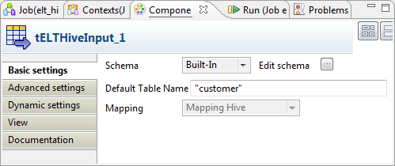
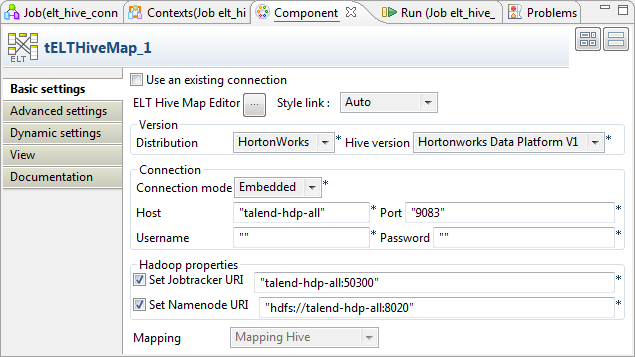
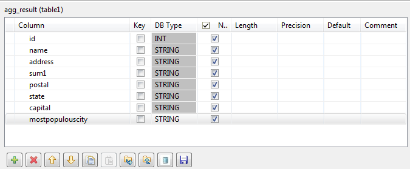
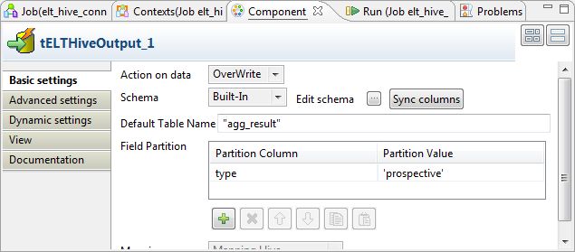

Les trois composants ELT Hive sont étroitement liés en ce qui concernent leurs conditions d'utilisation. Ces composants sont conçus pour prendre en charge les schémas Hive DB afin de générer des commandes Insert, dont des clauses, qui sont exécutés dans la table de sortie définie.
|
Famille de composant |
ELT/Map/Hive | |
|
Fonction |
Le composant tELTHiveMap utilise les tables fournies en entrée pour alimenter les paramètres dans la commande mise en place. L'instruction peut inclure des joints internes ou externes qui peuvent être implémentés entre des tables ou entre une table et ses alias. | |
|
Objectif |
Ce composant permet de construire votre commande SQL graphiquement en utilisant la table fournie en entrée. | |
|
Basic settings |
Use an existing connection |
Cochez cette case et sélectionnez le composant de connexion adéquat à partir de la liste Component list pour réutiliser les paramètres d’une connexion que vous avez déjà définie. NoteLorsqu’un Job contient un Job parent et un Job enfant, si vous souhaitez utiliser une connexion existant entre les deux niveaux, par exemple pour partager la connexion créée par le Job parent avec le Job enfant, vous devez :
Pour plus d’informations concernant le partage d’une connexion à travers différents niveaux de Jobs, consultez le Guide utilisateur de Talend Data Integration Studio. |
|
|
ELT Hive Map editor |
L’éditeur ELT du Mapper vous permet de définir le schéma de sortie ainsi que de construire graphiquement la commande Hive QL à exécuter. Le nom des colonnes du schéma peut être différent du nom des colonnes dans la base de données. |
|
|
Style link |
Sélectionnez le type d’affichage des liens. Auto : par défaut, les liens entre les schémas d’entrée et de sortie et les paramètres du service Web sont en forme de courbe. Bezier curve : les liens entre les schémas et les paramètres du service Web sont en forme de ligne. Line : les liens entre les schémas et les paramètres du service Web sont en forme de lignes droites. Cette option vous permettra d’optimiser les performances. |
|
|
Property type |
Peut-être Built-in ou Repository. |
|
|
|
Built-in : Propriétés utilisées ponctuellement. |
|
|
|
Repository : Sélectionnez le fichier de propriétés du composant. Les champs suivants sont alors pré-remplis à l’aide des données collectées. |
|
Version |
Distribution |
Sélectionnez dans la liste déroulante le produit que vous utilisez comme distribution d'Hadoop. Les options dans la liste varient selon la distribution que vous utilisez. |
|
|
Hive version |
Sélectionnez la version de la distribution d'Hadoop que vous utilisez. |
|
|
Connection mode |
Sélectionnez dans la liste un mode de connexion. Les options varient selon la distribution que vous utilisez. |
|
|
Host |
Adresse IP du serveur de base de données |
|
|
Port |
Numéro de port d’écoute du serveur de la base. |
|
|
Database |
Nom de la base de données. Selon la documentation de Hive, le seul nom de base de données supporté est default. Pour plus d'informations, consultez https://cwiki.apache.org/Hive/hiveclient.html (en anglais). |
|
|
Username et Password |
Données d’authentification de l’utilisateur de la base |
|
Hadoop properties |
Set Jobtracker URI |
Cochez cette case pour indiquer l'emplacement du service Hadoop Jobtracker à utiliser. Par exemple, si vous avez choisi une machine nommée machine1 comme JobTracker, définissez son emplacement comme suit machine1:portnumber. Cette propriété est requise lorsque la requête que vous souhaitez utiliser est exécutée
dans Windows et est une requête Vous pouvez laisser cette case décochée, lorsqu'une requête est exécutée sous Windows mais ne
nécessite pas le framework Hadoop Map/Reduce, par exemple, Pour plus d'informations concernant le framework Hadoop Map/Reduce, consultez le tutoriel Map/Reduce dans la documentation Hadoop. |
|
Set NameNode URI |
Cochez cette case pour indiquer l'emplacement du NameNode du cluster Hadoop à utiliser. Cette propriété est requise lorsque la requête que vous souhaitez utiliser est exécutée
dans Windows et est une requête Vous pouvez laisser cette case décochée, lorsqu'une requête est exécutée sous Windows mais ne
nécessite pas le framework Hadoop Map/Reduce, par exemple, Pour plus d'informations concernant le framework Hadoop Map/Reduce, consultez le tutoriel Map/Reduce dans la documentation Hadoop. | |
|
Advanced settings |
Hadoop properties |
Si vous devez utiliser la configuration personnalisée pour votre Hadoop, renseignez dans cette table la ou les propriété(s) à personnaliser. Lors de l'exécution, la ou les propriété(s) personnalisée(s) vont écraser celles définies précédemment pour Hadoop. Pour plus d'informations concernant les propriétés requises par Hadoop, consultez la documentation Hadoop. |
|
|
tStat Catcher Statistics |
Cochez cette case pour collecter les données de log au niveau du Job ainsi qu’au niveau du composant. |
|
Temporary path |
Si vous ne souhaitez pas configurer le Jobtracker et le NameNode lorsque vous exécutez la
requête | |
|
Dynamic settings |
Cliquez sur le bouton [+] pour ajouter une ligne à la table. Dans le champ Code, saisissez une variable de contexte afin de sélectionner dynamiquement votre connexion à la base de données parmi celles prévues dans votre Job. Cette fonctionnalité est utile si vous devez accéder à plusieurs tables de bases de données ayant la même structure mais se trouvant dans différentes bases de données, en particulier lorsque vous travaillez dans un environnement dans lequel vous ne pouvez pas changer les paramètres de votre Job, par exemple lorsque votre Job doit être déployé et exécuté dans un Studio Talend indépendant. La table Dynamic settings n'est disponible que si la case Use an existing connection est cochée dans la vue Basic settings. Lorsqu'un paramètre dynamique est configuré, la liste Component List devient inaccessible dans la vue Basic settings. Pour plus d'informations concernant les Dynamic settings et les variables de contexte, consultez le Guide utilisateur Talend Data Integration Studio. | |
|
Utilisation |
Le tELTHiveMap est généralement utilisé avec d'autres composants, tels que le tELTHiveInput et le tELTHiveOutput. Notez que le lien de sortie (output) à utiliser avec ces deux composants doit respecter strictement la syntaxe du nom de la table. Si le Studio utilisé pour vous connecter à une base de données Hive fonctionne sous Windows, vous devez créer manuellement un fichier appelé tmp à la racine du disque où le Studio est installé. NoteLes composants ELT ne traitent pas le flux de données lui-même mais uniquement les informations du schéma. | |
Les composants ELT ne traitent pas les données en tant que telles mais les informations du schéma descriptif de la table qui seront utilisées pour alimenter les paramètres de la requête Hive QL à exécuter.
Par conséquent la connexion requise pour relier ces différents composants est simplement un lien qui porte le nom de la table.
Note
Le nom de la sortie que vous donnez à ce lien lors de sa création doit correspondre exactement au nom de la table car ce paramètre sera utilisé lors de la génération de la commande Hive QL.
Consultez également le Guide utilisateur de Talend Data Integration Studio.
Dans le Mapper ELT, vous pouvez sélectionner des colonnes spécifiques des schémas d’entrée et les ajouter dans le schéma de sortie.
De la même manière que dans l’éditeur du Mapper ETL, simplement glissez et déposez le contenu du schéma d’entrée vers le schéma de sortie.
Utilisez les touches Ctrl et Maj pour la sélection multiple des colonnes contiguës ou non.
Vous pouvez mettre en place des jointures explicites pour extraire des données variées de différentes tables.
Cliquez sur la liste déroulante Join et sélectionnez une jointure explicite.
Les jointures suivantes sont disponibles : Inner Join, Left Outer Join, Right Outer Join ou Full Outer Join et Cross Join.
Par défaut la jointure interne (Inner Join) est sélectionnée.
Vous pouvez également créer des tables Alias afin de sélectionner des données variées dans une même table.
Dans la zone Input, cliquez sur le bouton plus
 pour créer un Alias.
pour créer un Alias. Définissez la table sur laquelle l’alias est basé.
Saisissez un nom pour la table alias, de préférence veillez à ce qu’il soit différent de la table principale pour éviter les confusions.
Vous pouvez également restreindre la requête Select à l’aide d’une clause WHERE. Cliquez sur le bouton Add filter row situé en haut de la table de sortie et saisissez la condition que vous souhaitez appliquer.
Veillez à ce que les composants d’entrée soient tous liés correctement au composant ELT Map pour garantir que les inclusions, jointures et clauses fonctionnent.
Ce scénario utilise un Job comprenant quatre composants afin d'effectuer une jointure sur les colonnes sélectionnées de deux tables Hive et de les écrire dans une autre table Hive.
Créez la table Hive dans laquelle vous souhaitez écrire des données. Dans ce scénario, cette table est nommée agg_result et vous pouvez la créer à l'aide de l'instruction suivante dans le tHiveRow :
create table agg_result (id int, name string, address string, sum1 string, postal string, state string, capital string, mostpopulouscity string) partitioned by (type string) row format delimited fields terminated by ';' location '/user/ychen/hive/table/agg_result'
Dans cette instruction, '/user/ychen/hive/table/agg_result' est le répertoire utilisé pour stocker la table créée dans HDFS. Vous devez le remplacer par le répertoire à utiliser dans votre environnement.
Pour plus d'informations concernant le tHiveRow, consultez la section intitulée « tHiveRow ».
Créez deux tables d'entrée Hive contenant les colonnes sur lesquelles vous souhaitez effectuer une jointure et que vous souhaitez agréger dans la table Hive de sortie, agg_result. Les instructions à utiliser sont :
create table customer (id int, name string, address string, idState int, id2 int, regTime string, registerTime string, sum1 string, sum2 string) row format delimited fields terminated by ';' location '/user/ychen/hive/table/customer'
et
create table state_city (id int, postal string, state string, capital int, mostpopulouscity string) row format delimited fields terminated by ';' location '/user/ychen/hive/table/state_city'
Utilisez le tHiveRow pour charger les données dans les deux tables d'entrée, customer et state_city. Les instructions à utiliser sont :
"LOAD DATA LOCAL INPATH 'C:/tmp/customer.csv' OVERWRITE INTO TABLE customer"
et
"LOAD DATA LOCAL INPATH 'C:/tmp/State_City.csv' OVERWRITE INTO TABLE state_city"
Les deux fichiers, customer.csv et State_City.csv, sont deux fichiers locaux créés pour ce scénario. Vous devez créer vos fichiers afin de fournir les données aux tables Hive d'entrée. Le schéma des données de chaque fichier doit être identique à la table correspondante.
Vous pouvez utiliser le tRowGenerator et le tFileOutputDelimited pour créer facilement les deux fichiers. Pour plus d'informations concernant ces composants, consultez la section intitulée « tRowGenerator » et la section intitulée « tFileOutputDelimited ».
Pour plus d'informations concernant le langage de requêtes Hive, consultez https://cwiki.apache.org/Hive/languagemanual.html (en anglais).
Dans la perspective Integration du Studio, créez un Job vide depuis le nœud Job Designs dans la vue Repository.
Pour plus d'informations concernant la création d'un Job, consultez le Guide utilisateur de votre Studio d'intégration.
Déposez deux composants tELTHiveInput, un tELTHiveMap et un tELTHiveOutput dans l'espace de modélisation graphique.
Reliez les composants à l'aide de liens Row > Main.
A chaque connexion de deux composants, un assistant s'ouvre et vous demande de nommez le lien que vous créez. Ce nom doit être le même que celui de la table Hive à traiter par le composant actif. Dans ce scénario, les tables d'entrée gérées par les deux composants tELTHiveInput sont customer et state_city et la table de sortie traitée par le tELTHiveOutput est agg_result.
Double-cliquez sur le composant tELTHiveInput utilisant le lien customer afin d'ouvrir sa vue Component.
Cliquez sur le bouton [...] à côté du champ Edit schema pour ouvrir l'éditeur du schéma
Cliquez sur le bouton
autant de fois que nécessaire pour créer des colonnes.
Renommez-les de la même manière que dans le schéma de la table customer précédemment créée dans Hive.
Pour configurer ce schéma, vous pouvez également utiliser le schéma customer récupéré et stocké dans le Repository. Pour plus d'informations concernant la configuration d'une connexion à Hive et la récupération d'un schéma du Repository, consultez le Guide utilisateur de votre Studio d'intégration.
Dans le champ Default table name, saisissez le nom de la table d'entrée, customer, à traiter par ce composant.
Double-cliquez sur le second tELTHiveInput utilisant le lien state_city pour ouvrir sa vue Component.

Cliquez sur le bouton [...] à côté du champ Edit schema pour ouvrir l'éditeur du schéma.
Cliquez sur le
autant de fois que nécessaire pour ajouter des
colonnes. Renommez-les de la même manière que dans le schéma de la table
state_city précédemment créée dans
Hive.
Dans le champ Default table name, saisissez le nom de la table d'entrée, state_city, à traiter par ce composant.
Procédure 11.1. Configurer la connexion à Hive
Cliquez sur le composant tELTHiveMap, puis cliquez sur l'onglet Component pour ouvrir la vue correspondante.
Dans la zone Version, sélectionnez la distribution d'Hadoop que vous utilisez, ainsi que la version de Hive.
Dans la liste Connection mode, sélectionnez le mode de connexion à utiliser. Si votre distribution est HortonWorks, ce mode est Embedded uniquement.
Dans les champs Host et Port, saisissez les informations d'authentification pour que le composant se connecte à Hive. Dans cet exemple, l'hôte est talend-hdp-all et le port est 9083.
Cochez la case Set Jobtracker URI et saisissez l'emplacement du Jobtracker. Par exemple, talend-hdp-all:50300.
Cochez la case Set NameNode URI et saisissez l'emplacement du NameNode. Par exemple, hdfs://talend-hdp-all:8020.
Procédure 11.2. Mapper les schémas
Cliquez sur le bouton ELT Hive Map Editor afin de mapper les schémas

Du côté de l'entrée (à gauche), cliquez sur le bouton Add alias pour ajouter la table à utiliser.

Dans la fenêtre qui s'ouvre, sélectionnez la table customer, puis cliquez sur OK.
Répétez l'opération pour sélectionner la table state_city.
Glissez-déposez la colonne idstate de la table customer dans la colonne id de la table state_city. Une jointure Inner Join est automatiquement créée.
Du côté de la sortie (à droite), la table agg_result est vide. Cliquez sur le bouton
, en bas, pour ajouter autant de colonnes que
nécessaire. Nommez-les de la même façon que dans le schéma de la table
agg_result précédemment créée dans
Hive. Note
La colonne type est la colonne partitionnée de la table agg_result et ne doit pas être dupliquée dans ce schéma. Pour plus d'informations concernant la partition de colonnes dans des tables Hive, consultez le manuel de Hive.
De la table customer, glissez-déposez les colonnes id, name, address et sum1 dans les colonnes correspondantes de la table agg_result.
De la table state_city, glissez-déposez les colonnes postal, state, capital et mostpopulouscity dans les colonnes correspondantes de la table agg_result.
Cliquez sur OK pour valider ces modifications.
Double-cliquez sur le composant tELTHiveOutput pour ouvrir sa vue Component.
Si le schéma de ce composant est différent de celui du composant précédent, une icône d'avertissement apparaît. Dans ce cas, cliquez sur le bouton Sync columns afin de récupérer le schéma du composant précédent. L'icône disparaît.
Dans le champ Default table name, saisissez le nom de la table de sortie dans laquelle vous souhaitez écrire les données. Dans ce scénario, la table est agg_result.
Sous la table Field partition, cliquez sur le bouton
pour ajouter une ligne. Cela vous permet d'écrire des
données dans la colonne de partition de la table agg_result.Cette colonne de partition a été définie lors de la création de la table agg_result à l'aide de
partitioned by (type string), dans l'instructionCreateprécédemment présentée. Cette colonne de partition est type, elle décrit le type des clients.Dans la colonne Partition column, saisissez type sans guillemet. Dans la colonne Partition value, saisissez prospective entre guillemets simples.
Appuyez sur F6 pour exécuter le Job.
Vérifiez la table agg_result dans Hive, en utilisant, par exemple,
select * from agg_result;
Cette capture d'écran ne montre qu'une partie de la table. Vous pouvez constater que les colonnes d'entrée sélectionnées sont agrégées et écrites dans la table agg_result. La colonne de partition est remplie avec la valeur prospective.